特征处理之(三)：离散化
数据和特征决定了机器学习的上限，而模型和算法只是逼近这个上限而已！
离散化简化了模型训练的复杂性，降低模型过拟合的风险，对异常数据有更强的鲁棒性。另外离散化之后可以进行特征编码，提升训练时间，也能模型提升表达能力。是个非常重要的特征处理方式。
特征处理之离散化
一、什么是离散化
将连续型的特征进行离散处理，得到有限的离散值。
如图：
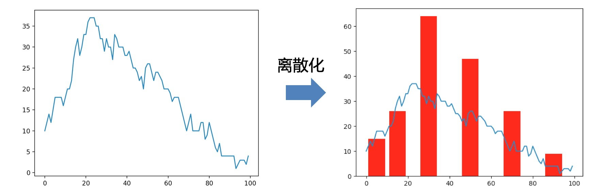
另外再借用哑编码的图片：
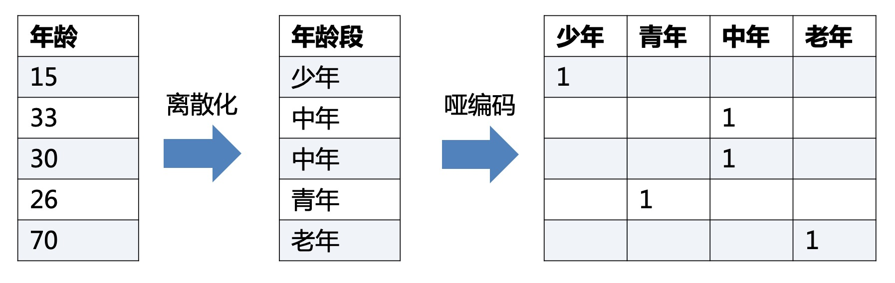
二、离散化有什么作用
- 简化了模型训练的复杂性，降低模型过拟合的风险（离散化带来的优势）
- 离散化后的特征对异常数据有很强的鲁棒性（离散化带来的优势）
- 稀疏向量内积乘法运算速度快，因为稀疏矩阵有实数的值很少，做内积运算时就会有很多优化手段
- 线性模型表达能力受限，单变量离散化为N个后，每个变量有单独的权重，相当于为模型引入了非线性，能够提升模型表达能力，加大拟合能力；
- 离散化后可以进行特征交叉，由M+N个变量变为M*N个变量，进一步引入非线性，提升表达能力
红色部分是离散化带来的作用或者说优点，蓝色部分是离散化后的哑编码带来的作用和优点。
三、 如何离散化（无监督）
假设有一串连续的数值，我们需要对其进行离散化：以下都会使用这份数据作为例子。
1 | 例子: 1 3 4 5 5 6 7 7 8 10 11 13 15 |
3.1 等距/等频离散
（1）等距离散
用相等的距离作为范围，使得在同一范围内的数值，被认定为同一类别。
假设距离为5，那么就有A:(0,5],B:(5,10],C:(10,15]三个离散范围
于是，我们将上面的例子进行离散:
等距离散:
1 | 范围选择 A:[1 3 4 5 5], B:[6 7 7 8 10], C:[11 13 15] |
（2）等频离散
用相等选择频度作为范围，使得在同一频度内的数值，被认定为同一类别。
假设距离为3，
于是，我们将上面的例子进行离散:
等距离散:
1 | 步频选择 A:[1 3 4], B:[5 5 6], C:[7 7 8], D:[10 11 13], E:[15] |
3.2 KMeans离散
借助于KMeans聚类的思路，将数值进行聚类，最终聚为一类的则被认定为同一类别。
这里不太好举例子，咱们用数轴来表述，数轴上蓝色蛋蛋更大意味着数据在这里的数据越多。
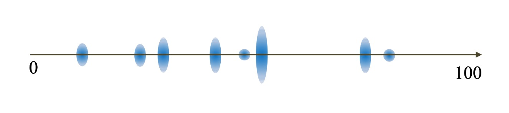
然后咱们开始，K=3的聚类，首先随机散落三个点作为中心点
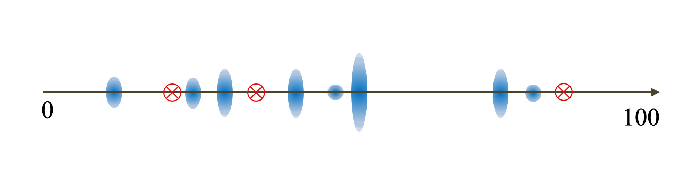
所有的数值，选择离散落的三个点最近的点作为第一次聚类结果
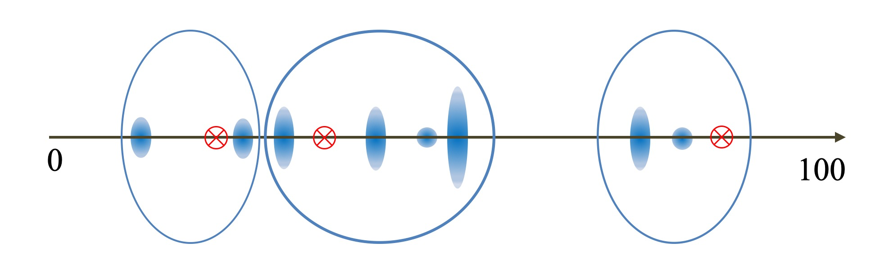
以聚类结果的中心，作为新的三个中心点，重新重复上述过程。
最终会收敛聚类结果不再变化。
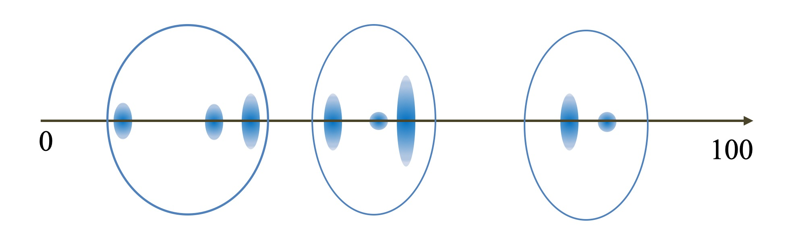
四、如何离散化（有监督）
有监督的离散化，主要利用了已有的类别标注来将特征进行更好地离散。为了表达方便，将上面使用的例子标注一行类目。
1 | 例子: 1 3 4 5 5 6 7 7 8 10 11 13 |
4.1 基于信息增益的离散
这种方式是一种二分方式的离散方式，每一步只离散两份，然后再在这两份中用同样的方式进行离散，直到达到离散个数的目标或者层数的目标。
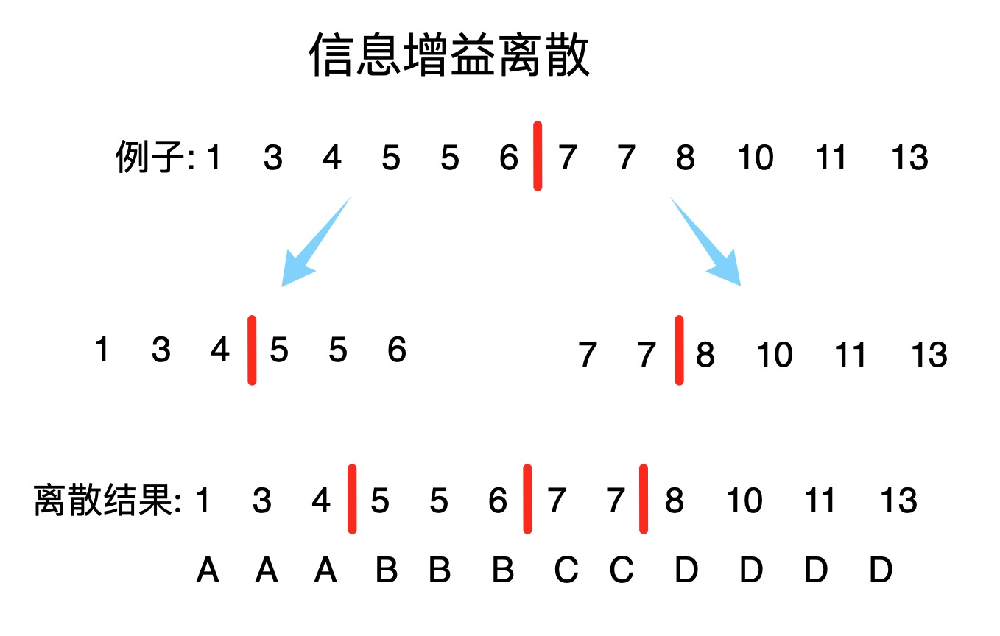
那么每一步是如何找到最佳的离散点的，就是基于信息增益率的最大化。
为每一个可能的离散点，都计算一次信息增益率，选择信息增益率最大的那个离散点，作为本次离散的点。
如何计算信息增益率，偷个懒直接截图PPT了，这里列出了信息熵到信息增益率的公式表达：
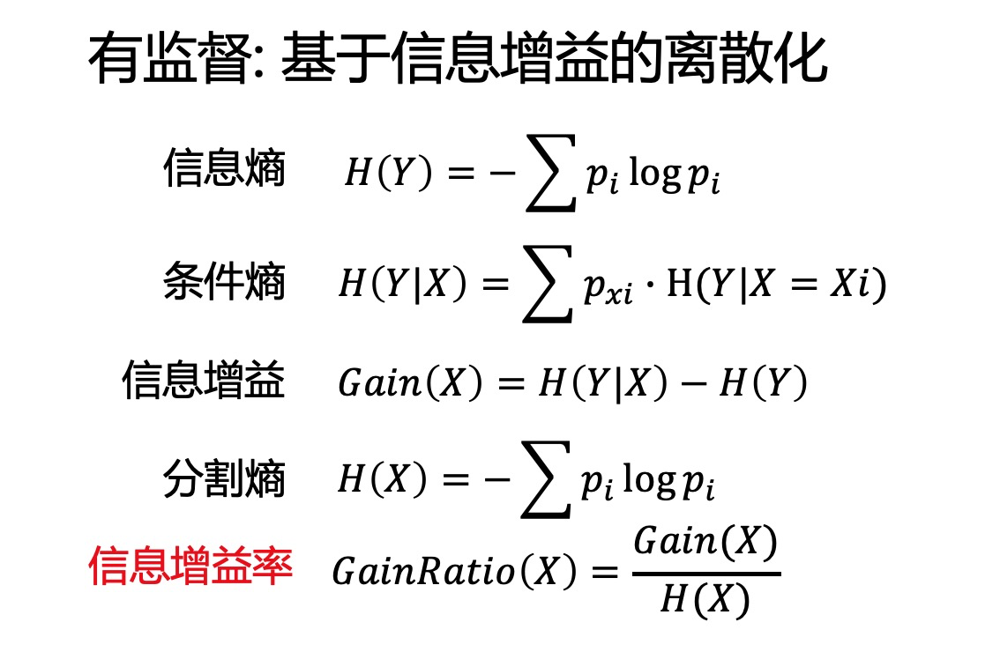
公式没有说明白，那么用一个例子来进行计算，如下图
信息熵: 因为有12个数据，其中有5个C2，7个C1，因此Y的信息熵为$H(Y)=0.9798$
条件熵: 如果离散的分割线在红色位置，那么离散后红色之前都是X1，红色之后都是X2，因此条件就是X。因为X1有5个数据，因此$p_xi=\frac{5}{12}$，其中有1个C2和4个C1，因此$H(Y|X=X1)=-\frac{1}{5}log\frac{1}{5}-\frac{4}{5}log\frac{4}{5}$
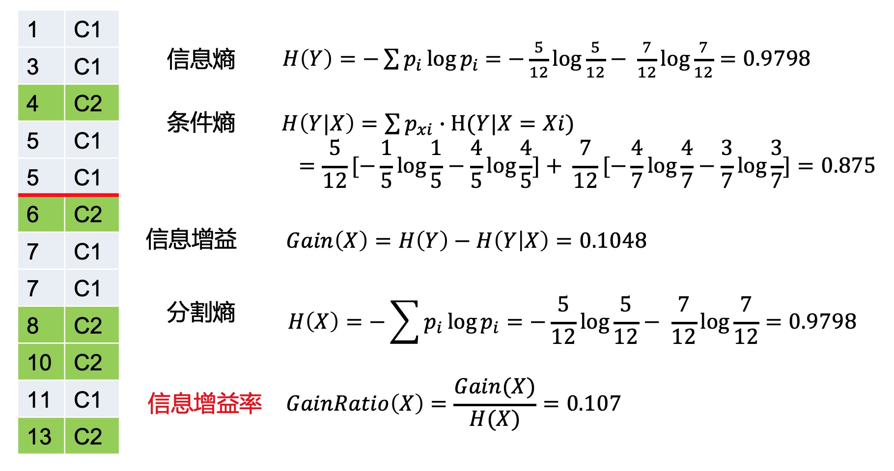
剩下的基本已经很简单了，可以直接自行计算。
4.2 基于Gini增益的离散
与基于信息增益的离散，唯一的区别就是衡量方式由信息增益率变成了Gini增益。Gini增益的计算如下：
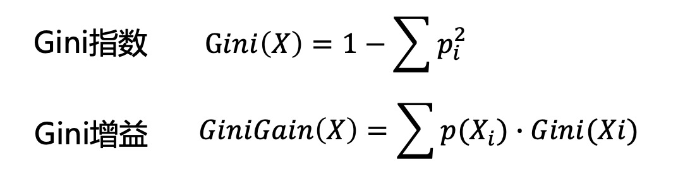
结语
特征处理是在机器学习中占据非常重要的地位，特征工程决定了整个模型的上限，而特征工程中最基础的就是特征处理。本篇主要回顾下特征处理中的离散化。最后最后拿出成果：
- 什么是离散化
- 离散化有什么作用
- 如何进行无监督离散
- 如何进行有监督离散
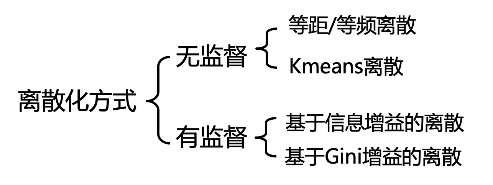